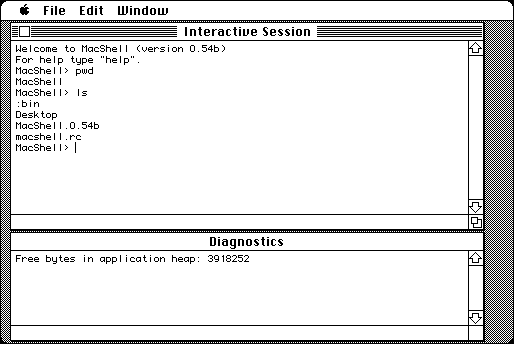

Download
MacShell.0.54b.new.zip (82K) MacShell 0.54b repackaged into a zipped hfs disk image and checksum file. The disk image can be mounted with Mini vMac.
MacShell.0.54b.new.sit.hqx (156K) MacShell 0.54b in the original format.
copyright: Fred Videon
mod date: Jan 21, 1996
license: free for non-commercial use
official url :
MacShell
“Unix-like command line interface.” Source code is available.

If you find these downloads useful, please consider helping the Gryphel Project, which hosts them.
Download Source and Extension Template
MacShell.0.54b.newsrc.zip (209K) MacShell 0.54b source repackaged into a zipped hfs disk image and checksum file. The disk image can be mounted with Mini vMac.
MacShell.0.54b.newsrc.sit.hqx (344K) MacShell 0.54b source in the original format.
MacShell.ext.codenew.zip (20K) MacShell Extension Template repackaged into a zipped hfs disk image and checksum file. The disk image can be mounted with Mini vMac.
MacShell.ext.codenew.sit.hqx (29K) MacShell Extension Template in the original format.
Here are the md5 checksums for the downloads, signed with Gryphel Key 5:
--------- GRY SIGNED TEXT --------- e620463a732b9a3a46662d77eb83b8b3 MacShell.0.54b.new.zip 250dcb9868522037be8e192761421d45 MacShell.0.54b.new.sit.hqx f65f726af8aa72d725423e9ccda2d019 MacShell.0.54b.newsrc.zip fe70c62cecaf87117683a221c325a8e0 MacShell.0.54b.newsrc.sit.hqx 88d4e1ce5f6e27c27eb1938273213d62 MacShell.ext.codenew.zip a88fc2da01413dcbd00263cf52a548d0 MacShell.ext.codenew.sit.hqx ------- BEGIN GRY SIGNATURE ------- Gry/4Xa8CFcUzxdN/FcvIE+Lsaad7Sh/Lj80dDxaoi6Eh6B0pROeIsU3GktwcEmh iR4YAbA0bSJS95qAIL9wQjg3IjWnoiV77uU7QSktH80x/U5CWUwKQ6rz8czLrPIP DcirD8cKEhBp8ue5DQR7nCwylbx4Y1Qbx7l03CHkPghe+lKwaW3C5O0PpX5+Lkdc -------- END GRY SIGNATURE --------